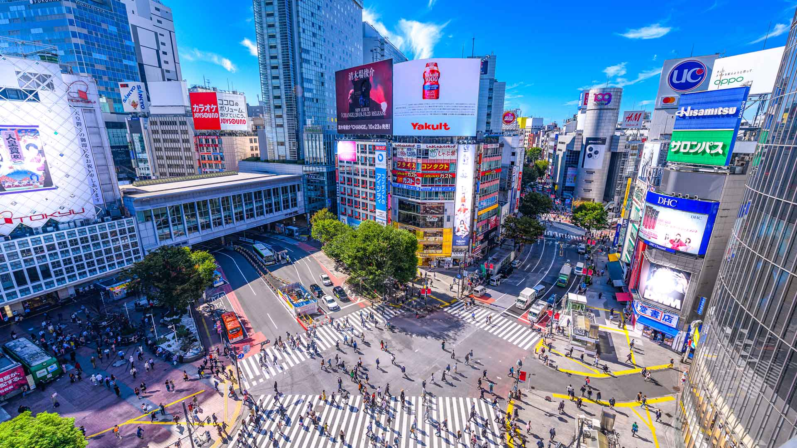

This part of Tokyou is famously known for its crosswalk!
You can ask anybody who loves Tokyou, and they will think
about Shibuya straight away!, surprising how one dictrict
has so much power over people, right?